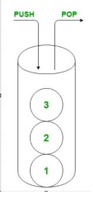

| Тема 3. Коллекция Стек (Stack) C# | ||
| Назад | ||
|
Стек представляет собой коллекцию объектов, поступающих последней.
Стеки похожи по своей структуре на очереди. Однако если очередь гарантирует, что элементы извлекаются из коллекции в том порядке, в котором они были добавлены, стеки позволяют извлекать сначала самые последние добавленные элементы. Это известно как последним пришёл — первым ушёл или LIFO.  В операционных системах и языках разработки высокого уровня часто используются стеки. Одним из ключевых применений является сохранение точек возврата для вызовов программы. Каждый раз, когда вызывается подпрограмма, адрес вызывающей функции добавляется или перемещается в стек. Когда подпрограмма завершается, последний адрес может быть извлечен или выскочил из стека, и нормальный поток программы может продолжаться из предыдущего местоположения. Более ранняя статья по обработке исключений C# содержит пример использования стека при чтении свойства StackTrace. Коллекция Stack Платформа .NET framework включает класс Stack. Он обеспечивает все функциональные возможности, необходимые для работы стеков LIFO без дополнительного кода. Класс Stack предоставляет простую коллекцию, которая может содержать любой тип объекта, включая дубликаты и значения null. Реализованные интерфейсы Коллекция стека реализует свойства и методы интерфейса ICollection. Это было описано в предыдущей статье интерфейсы коллекции. В остальной части этой статьи описываются дополнительные функциональные возможности, предоставляемые стеком. Конструкторы Класс Stack имеет три конструктора. Первый не требует никаких параметров. Он создает пустой стек с емкостью для хранения до десяти элементов. При добавлении одиннадцатого элемента емкость стека автоматически удваивается. Она удваивается снова каждый раз, когда емкость стека превышена. using System.Collections; Stack myLifo = new Stack();
Если максимальное число элементов, которые будут храниться в
стеке, известно до создания коллекции, более эффективно объявить
его. Если размер занижен, то размер стека все равно будет удвоен
для размещения дополнительных элементов. Чтобы объявить
начальный размер стека, передайте емкость конструктору в виде
целочисленного параметра.
Stack myLifo = new Stack(15);
Третий конструктор позволяет создать предварительно заполненный
стек, содержащий объекты из любого класса, реализующего
ICollection .
ArrayList myList = new ArrayList(); myList.Add("String 1"); myList.Add("String 2"); Stack myLifo = new Stack(myList); // копируем
Push
Стеки позволяют добавлять новые элементы в верхнюю часть стека, а затем извлекать их в обратном порядке. Чтобы добавить новый элемент в верхнюю часть стека, используйте метод Push. Этот метод принимает один параметр, являющийся объектом для добавления в стек. Stack breadcrumbs = new Stack(); breadcrumbs.Push("Home Page"); breadcrumbs.Push("Articles"); breadcrumbs.Push("C#"); Console.WriteLine("Count: {0}", breadcrumbs.Count); // "Count: 3"
Метод Pop
Для извлечения элементов из стека вызывается метод Pop. Pop возвращает элемент из верхней части стека и удаляет его из коллекции. Элемент возвращается как объект, который может быть приведен к правильному типу. В следующем примере метод ToString используется для выполнения преобразования, когда три элемента добавляются и затем извлекаются из стека. Нельзя сказать, что порядок извлечения является обратным порядку, в котором элементы были помещены в стопку. Stack breadcrumbs = new Stack(); breadcrumbs.Push("upread.ru"); breadcrumbs.Push("Блог"); breadcrumbs.Push("Статьи IT"); while (breadcrumbs.Count != 0) { string next = breadcrumbs.Pop().ToString(); Console.WriteLine(next); } /* Вывод Статьи IT Блог upread.ru */
Peek
Иногда необходимо получить следующий элемент в стеке, не удаляя его из коллекции. Метод Peek используется таким же образом, как и Pop, но когда получается значение верхнего элемента, то он также остается в положении. Stack breadcrumbs = new Stack(); breadcrumbs.Push("upread.ru"); breadcrumbs.Push("Блог"); breadcrumbs.Push("Статьи IT"); string next = breadcrumbs.Peek().ToString(); Console.WriteLine(next); // "C#" Console.WriteLine("Count: {0}", breadcrumbs.Count); // "Count: 3"
Другие методы работы со стеком
В дополнение к методам LIFO, класс Stack предоставляет другие функциональные возможности для изменения и чтения коллекции. Это увеличивает коллекцию с поведением, похожим на те, которые встречаются в некоторых других подобных типов. Clear Метод Clear используется для очистки содержимого стека. Метод не требует никаких параметров. Stack breadcrumbs = new Stack(); breadcrumbs.Push("Home Page"); breadcrumbs.Push("Articles"); breadcrumbs.Push("C#"); Console.WriteLine("Count: {0}", breadcrumbs.Count); // "Count: 3" breadcrumbs.Clear(); Console.WriteLine("Count: {0}", breadcrumbs.Count); // "Count: 0"
Contains
Часто вам нужно будет определить, существует ли элемент в стеке, но вы не хотите его доставать. Метод Contains разрешает это, возвращая логическое значение, указывающее, присутствует ли объект. Stack breadcrumbs = new Stack(); breadcrumbs.Push("Home Page"); breadcrumbs.Push("Articles"); breadcrumbs.Push("C#"); Console.WriteLine(breadcrumbs.Contains("Articles")); // "True" Console.WriteLine(breadcrumbs.Contains("SQL Server")); // "False"
ToArray
Существует еще один метод, который позволяет считывать содержимое стопки, не нарушая порядок элементов. Аналогичным образом , как и в случае с ArrayList, объекты в стеке могут быть извлечены в массив . Сам стек не затронут. Stack breadcrumbs = new Stack(); breadcrumbs.Push("Home Page"); breadcrumbs.Push("Articles"); breadcrumbs.Push("C#"); object[] array = breadcrumbs.ToArray(); foreach (object o in array) { Console.WriteLine(o.ToString()); } /* C# Articles Home Page */ |
||
| Конспект подготовлен Бакулиным А. М. 2022 год. | ||